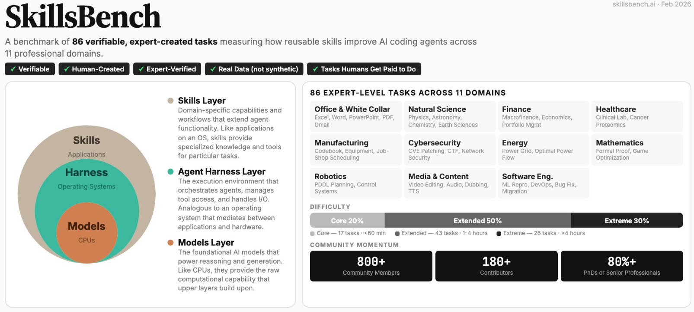

🔥 Want to see what state-of-the-art 3D coding looks like today?
Please check out my latest work, 3DCodeVerse!
|
News
|
[09/24/2026] Three papers accepted to NeurIPS 2026 (Evaluations & Datasets Track), including my first-author paper 3DCodeBench with review scores of 5/5/4, as well as two co-authored papers, SkillsBench and Harbor-Index.
[05/31/2026] We released 3DCodeBench, a benchmark for agentic procedural 3D modeling via code.
[02/20/2026] LAM was accepted to CVPR 2026.
|
Recent Works
For the full list of publications, please refer to Google Scholar.
|
|
3DCodeBench: Benchmarking Agentic Procedural 3D Modeling Via Code
Yipeng Gao,
Lei Shu,
Genzhi Ye,
Xi Xiong,
Ameesh Makadia,
Meiqi Guo,
Laurent Itti,
Jindong Chen
NeurIPS, 2026 (Evaluations & Datasets Track)
|
|
|
LAM: Language Articulated Object Modelers
Yipeng Gao,
Yunhao Ge,
Peilin Cai,
Daniel Seita,
Laurent Itti,
CVPR, 2026
|
|

|
SkillsBench: Benchmarking How Well Agent Skills Work Across Diverse Tasks
SkillsBench Team
NeurIPS, 2026 (Evaluations & Datasets Track)
|
|
|
Google DeepMind, CA, USA (Feb. 2026 - Now)
|
|
|
Bytedance, CA, USA (May. 2025 - Aug. 2025)
- Position: Research Scientist Intern
- Mentor: Tiancheng Zhi, Linjie Luo
- Project: Video Generation Conditioned on Interleaved Prompts with Multiple Identities
|
|
|
University of California Santa Cruz, CA, USA (Jul. 2023 - Nov. 2023)
|
|
Academic Service
Conference Reviewer: CVPR 2024-2026, ICCV 2025, ECCV 2024, ICML 2024-2025, ICLR 2024-2025, NeurIPS 2023-2026,
Journal Reviewer: TMLR, IEEE RA-L
|
Awards
USC Viterbi School of Graduate School Fellowship 2024
Outstanding Master's thesis at Sun Yat-sen University 2024
Chinese National Graduate Scholarship 2023
|
|